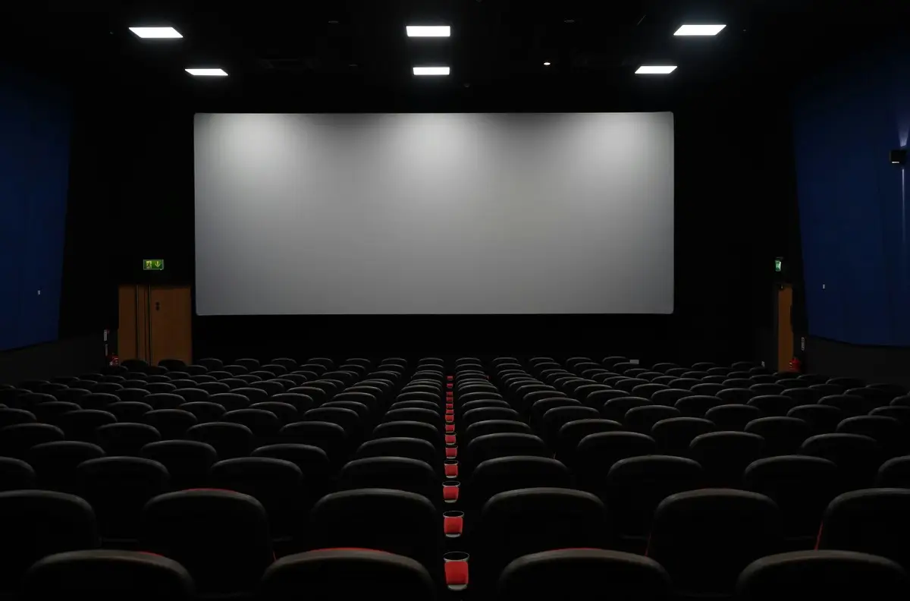
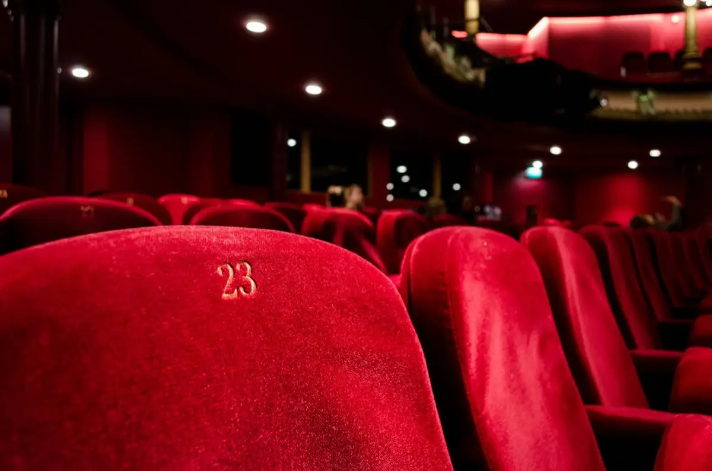
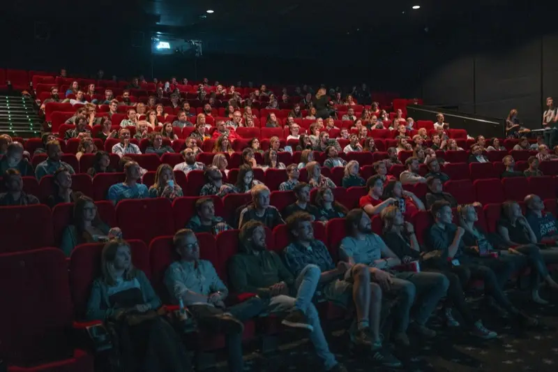
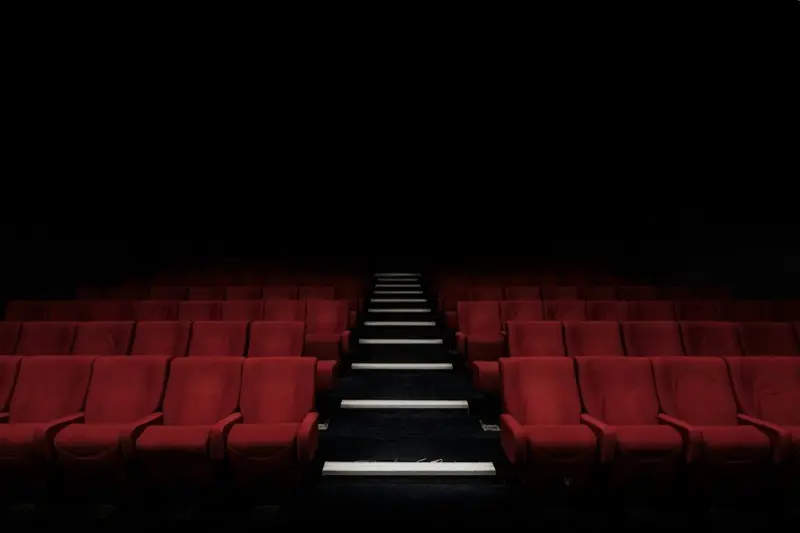
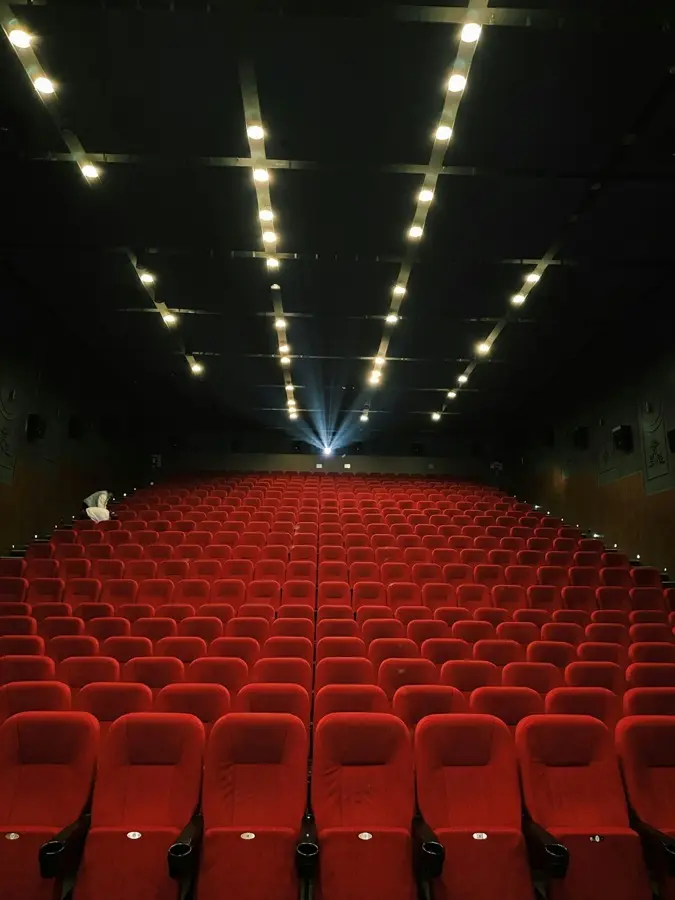
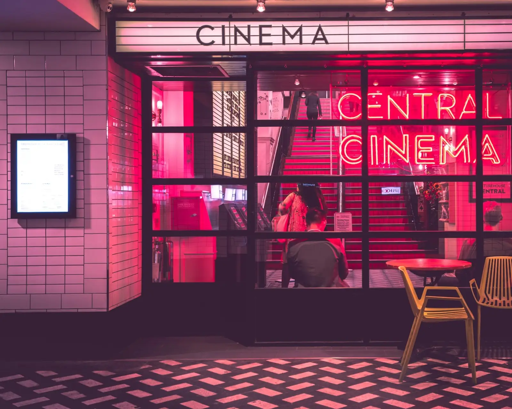

Scroll animations in plain CSS
Now showing in your stylesheet
One attribute per element. No JavaScript, so there is nothing to load, block or break.
<h2 data-dolly="tilt-up">
npm i @dollyjs/core
or one file: cdn.jsdelivr.net/
- Starring
- 34 moves, 13 exits
- Directed by
- Your browser
- JavaScript
- None
- Licence
- MIT
- Showing in
- Chrome 115 · Safari 26 · Firefox 159
- If the projector breaks
- The page shows exactly as written.

Take a seat.
Add one attribute.
Put data-dolly on an element you already have and name a camera move. That is the whole integration: no wrapper, no provider, no init call. The title card you scrolled past left with data-dolly-exit.
<link rel="stylesheet"
href="dolly.css">
<h2 data-dolly="crane">
Enter the hero
</h2>Enter the hero
Now showing.
Each move is named for what a camera does. If you know the film term, you can guess the attribute.

tilt-up rises into place
dolly-in pushes in toward it
pan-left travels in from the rightcrane lifts and settlesroll rotates levelIf the projector breaks.
Most scroll libraries set opacity: 0 on your content and wait for JavaScript to bring it back. When the script fails, so does the page. Dolly keeps the hidden state inside the animation, so a browser that can’t run it, or a reader who turned motion off, gets the page exactly as you wrote it.
dolly-in.Running time.
This table wiped in with reveal. Sizes are minified and gzipped. Dolly 0.4.0 is 2.7 kB of CSS; AOS 2.3.4 adds 2.2 kB of CSS to its JavaScript.

Tickets.
One install. Then delete whichever scroll library you were using.
npm i @dollyjs/coreor one file: cdn.jsdelivr.net/